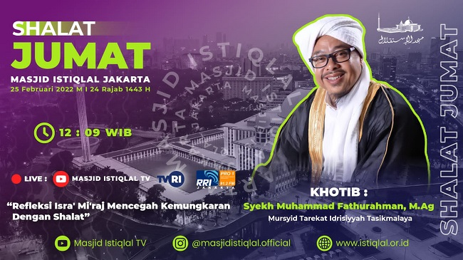

Rasulullah shallallahu ‘alaihi wasallam adalah teladan dalam berbagai persoalan dan ibadah termasuk shalat. Berkenaan dengan shalat, Rasulullah SAW menganjurkan umatnya agar shalat sebagaimana beliau shalat.
Pada peristiwa Isra Mi’raj digambarkan bahwa semua para Nabi alaihis salam 'turun' ke bumi Palestina untuk melaksanakan shalat bersama Nabi shallallahu ‘alaihi wasallam di Masjidilaqsa.
Mereka bershaf-shaf berada di belakang Nabi shallallahu ‘alaihi wasallam sebagai bentuk penghormatan kepada Nabi yang terakhir. Kalau dilihat lebih mendalam, betapa hebat ajaran Islam yang bisa mempresentasikan (arwah) orang sudah meninggal hingga bisa berjumpa dengan yang masih hidup. Pada kejadian selanjutnya para Nabi alaihis salam yang berada di langit satu, dua, hingga ke tujuh semuanya memperkuat misi Kenabian akhir zaman.
Begitu berat tugas Nabi yang sedang manggung dalam menjalankan misi dakwahnya. Perjumpaan dengan ruhani merupakan seperti Isra Mi’raj adalah kenikmatan yang luar biasa bagi para Nabi alaihis salam.
| Imsak | 04:15 |
| Subuh | 04:25 |
| Duha | 06:12 |
| Dzuhur | 12:04 |
| Ashar | 15:29 |
| Magrib | 18:17 |
| Isya | 19:32 |